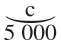
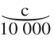
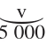
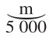
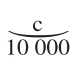
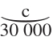
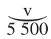
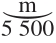

[（3）固定资本在再生产过程中的作用]
[132]（3）在我们转入研究积累之前，必须对固定资本在再生产过程中的作用做些补充。
固定资本在年产品的生产中受到磨损，它把自己的价值转移到年产品上——而且必须在实物形式上或按其价值通过年再生产来进行补偿——，这些在谈到不变资本的再生产时已经考察过了。
但是，固定资本，只要它还没有磨损完，从而没有把价值转移到产品上，因此没有进入再生产过程——就它是价值的再生产和补偿而言，它是在劳动过程中，因而是在再生产过程中被应用，执行职能的——，那它就会在使用价值的生产过程中起作用。这部分固定资本所起的作用像纯自然力一样是无偿的。
每年消耗的固定资本部分无须每年以实物形式补偿。例如，机器的价值一年有1/12转移到产品上，但机器继续执行职能，不需要以实物形式补偿这1/12。建筑物和其他固定资本的情况也是如此。例如，用货币向机器成品的卖者支付这些固定资本的代价，从而形成机器卖者的货币资本。这些固定资本或者以金属货币或者只是以价值符号得到支付。在前一种场合，工厂主再把货币存到银行家那里，银行家把它们预付给另一些生产者，也可能就是同一个工厂主，作为他支付工资等等所需要的货币资本的一部分。不论在哪种场合，一部分年产品必须转化为一定数量的货币，这个数量要足够补偿这些开支。但如果流通的全是金属货币，那么工厂主就只是为未来的生产而积累价值符号。当他必须补偿机器时，他就向银行家开出支票，也可能把支票交给机器占有者，后者又把它存到自己的银行家那里，于是价值符号从A转到B，机器从B转到A。可见，不论流通的是金属货币还是纸币，这种准备金都会转化为对未来生产的要求权。
因此，每年使用的固定资本同每年消费的固定资本相比越多，已生产出来的生产力部分，即劳动资料部分就越大，这些劳动资料是过去劳动的产品，在生产过程中起着自己的作用，会提高所使用的活劳动的生产力，从而增加体现这种活劳动的年产品量，但并不进入价值增殖过程，因而这些劳动资料会使补偿收入和资本的年产品增加，而不会在年产品上加进价值，所以不会使它变贵。这些劳动资料虽然是社会劳动创造的社会生产力，但起的作用却类似为生产目的服务的自然力。
同每年消费的、因而应该用产品补偿的那部分固定资本相比，每年使用的固定资本（它进入劳动过程而不进入价值增殖过程）的量，取决于两种情况：
（1）取决于在每一个既定时刻全部固定资本同预付总资本相比的一定量；
（2）取决于固定资本的周转时间。
关于（1）。为解决这个问题，必须把所使用的固定资本部分同所消费的部分的比例，即后者的周转时间，看做是不变的，而把固定资本的量看做是可变的。
假定每年消费的固定资本同每年使用的固定资本的平均比例是1/10。这样，如果固定资本是每年预付总资本的1/10，那么在这个总资本价值中，每年必须得到补偿的就有9/10的流动资本和1/100的固定资本。总共要补偿的是90/100＋1/100＝91/100，所以一年中有9/100在无偿地执行职能。如果固定资本是预付总资本的2/10或1/5，那么在总资本的价值中就有4/5或8/10的流动资本必须用年产品来补偿，而要补偿的固定资本是1/50或2/100。这样一来，全部资本中每年有80/100＋2/100＝82/100必须得到补偿，换句话说，比前一场合少了9/100，而在一年中有18/100＝9/50无偿地执行职能。如果固定资本是总资本的1/4，流动资本就是3/4。在这种情况下，1/40或10/100的固定资本和30/40或300/400的流动资本必须得到补偿，因而总共是310/400和90/400，换句话说，是9/40无偿地执行职能。
但是，资本主义生产方式的规律是固定资本的绝对量不断增长。固定资本部分越是绝对增加，在年产品的生产中作为生产力发挥作用而无须用年产品补偿的那个资本部分，就越是绝对增加。然而流动资本，即流动不变资本，也在增长；相反，流动可变资本同预付总资本相比却在减少。因此，固定资本的增加虽然和流动不变资本的更大的相对增加联系在一起，但也和流动可变资本的相对减少联系在一起。
[133]首先很清楚，如果所消费的固定资本部分同所使用的部分的比例保持不变，那么全部固定资本越多，不但产品中必须补偿固定资本的那个部分越大，而且固定资本中无偿地执行职能的那个部分也越大。如果全部固定资本等于50 000，应该补偿的就是5 000，如果全部固定资本等于100 000，应该补偿的就是10 000，而在前一场合无偿地起作用的是45 000，在后一场合是90 000。如果全部固定资本是200 000，应该补偿的就是20 000，而在全部固定资本为100 000的情况下，应该补偿的只是10 000。但是，在一个场合无偿起作用的是90 000，在另一场合却是180 000。应该补偿的绝对增大的部分，只不过是无偿地起作用的绝对增大的部分的指数。
因此，如果在固定资本绝对增长（虽然它的价值决不会同它的量和效力按同一比例增长）的情况下，如果在固定资本中每年使用的部分和每年消费的部分之间的比例不变的情况下，产品中应该补偿不变资本的那一部分每年的绝对增长只是无偿地执行职能的固定资本每年增长的指数——就是虽然使用但并没有消费掉的固定资本绝对增长的指数——，那么在任何情况下，即使所使用的和所耗费的固定资本的比例不变，也决不需要产品中必须补偿固定资本的那个相对部分增长。如果固定资本从50 000增长到100 000，每年有1/10被耗费，那么产品中用于补偿固定资本的，在前一场合只有5 000，在后一场合是10 000。如果不变流动资本（原料等）在前一场合是10 000，在后一场合（由于劳动生产力提高）是30 000，而可变资本在前一场合是5 000，在后一场合是5 500镑，那么年产品在前一场合＝＋＋＋（如果m′＝100%），因而等于25 000，其中1/5补偿固定资本。在后一场合：＋＋＋＝51 000，其中10/51补偿固定资本，可见，这个部分在总产品中虽然绝对增大了，但却相对变小了。我们说这是可能的。这种情况既取决于所使用的资本的构成，也取决于所使用的固定资本提高生产力（从而增加所加工的原料量）的程度。在有原料进入生产的地方，生产力的提高会表现为这部分不变资本的量和价值的增加。但是这部分不变资本越多，固定资本中每年消费的那部分尽管绝对增长，却会相对地越少。另一方面，可变资本不论同固定资本相比还是同流动不变资本相比都相对减少，并且，随着可变资本本身减少而流动不变资本部分增加的比例，每年消费的固定资本的相对量，即总产品中必须由资本补偿的相对部分，会增加或减少。
在没有原料的工业部门（采掘业、运输业等），诚然由辅助材料代替原料，但它们所起的作用同预付固定资本相比是不大的，虽然它们绝对地增长，但是并不与固定资本的使用，从而不与固定资本的消费按同一程度增长。此外，可变资本随着固定资本使用的增长而减少，无论如何，在相对地减少。因此，由于两个原因，产品中必须补偿不断增长的固定资本每年消费部分的那个部分在增长。但是这种增长是所使用部分而不是所消费部分绝对增长的指数。产品量比产品价值增长得快，因而体现新加劳动价值部分的产品量也在增长。
关于（2）。我们原先曾假定，所使用的固定资本和所消费的固定资本的比例是不变的，而全部固定资本的量是可变的。现在我们假定，全部固定资本的量是不变的，而上述比例是可变的。这个比例只不过是固定资本周转时间的另一种说法。如果固定资本＝100 000镑，它的周转时间＝5年，它每年加到产品上的就是20 000镑；如果它的周转时间＝10年，它每年加到产品上的就只是10 000镑；如果周转时间＝20年，每年加到产品上的就是5 000镑。可见，一年所消费的固定资本部分同所使用的部分相比，同它的周转时间成正比地减少。
[134]固定资本的规模增加得越大，它的存在形式就变得越庞大，周转时间就变得越长。于是它的平均周转时间不断延长。因此，虽然随着固定资本绝对量的增长，它的再生产的绝对量——或它的磨损——也一道增长，但它的再生产的绝对量同平均周转时间的延长相比，相对地在减少。
注意。（上面对（3）所作的说明，最好移到考察资本周转的本册第II章。）
固定资本体现着一部分现有资本——已经生产出来的生产力的量——，可以作为现有基础，为再生产的扩大，为再生产规模的扩大或积累的扩大服务，而并不一定从一开始就创造这个基础本身。在这种情况下，只是固定资本的周转加速了，它的周转时间或它被消费的时间缩短了。或者说，这样增加的只是它的年磨损，但这种增加并不与生产的现有规模或产品的现有量成比例，而是与产品的增长量成相等的比例（往往还要快些）。固定资本消费得更快了，但只是因为它被使用得更多了，或者总的来说，它在生产过程中执行职能更多了（内含上增加或外延上扩大）。资本主义生产方式越发展，固定资本的规模就越增大。因而，无须扩大这种基础本身就能在一定界限内扩大生产过程的那种潜力也就越大。如果铁路得到更多的使用，它就磨损得更快，但是使用这条现有铁路的运输业也就越发达。工作机的情况也是这样，工作机的运转加快了，或者它们在同一劳动过程中运转的时间更长了。因而，现有的固定资本可以成为再生产过程的极其不同程度的基础。这就是最新工业所创造的条件，这个条件可以使再生产过程在外延和内含方面更加多样化；而且，资本主义生产方式越发展，这种潜力，或能够为规模扩大的再生产服务的这种现有资本，就越大。
如果考虑到，在采掘业（采矿业、煤炭业、捕鱼、伐木等等）中，也就是说，恰恰在为生产追加固定资本（特别是还有机器）提供这些最主要的原料（金属、木材）和辅助材料（煤炭等等）的生产领域中，固定资本（在机器、船舶等形式上）起着多么大的作用；那就会自然地弄明白，固定资本已有的发展规模在多么大的程度上方便和推动了追加固定资本的生产，即积累或规模扩大的再生产的这个部分的生产。完全撇开上面提到的那种因素不谈，已经存在的固定资本（建筑物、工作机和交通运输工具）能够作为扩大生产过程的要素执行职能。
（除了固定资本的这种扩张能力以外，在这里同它作为生产要素的效力有关的还有，随着科学不断取得成就和科学的应用，固定资本中每年经常应该补偿的那部分以更具有生产效率的形式被再生产出来；所以固定资本的简单再生产同它的生产力的经常扩大（这至少适用于一部分固定资本）联系在一起。这一点并不像前面那个因素那样涉及到以固定资本形式存在的、或快或慢地被消费的、因而为较大或较小规模的生产服务的既定基金；而是涉及到固定资本的生产力的增长，或者更确切些说，涉及到固定资本所协助的那种劳动的生产力的增长。但是，生产力的这种发展是积累或规模扩大的再生产的决定性因素之一。）
[135]除了固定资本以外〔我们这里没有涉及农业，虽然它在考察再生产过程的变化和扩大时，实际上是一个重大的因素〕，还存在着另一个主要生产条件，即可以在外延或内含的不同程度上被使用和消耗的已经生产出来的生产力，现有的劳动力。（我们在这里撇开同时是积累的天然基础的人口自然增长，撇开非生产劳动者变为生产劳动者、原先不劳动的那部分人口进入劳动者的行列等等情况不谈。）现有的劳动力在外延或内含方面被利用的程度大小；资本主义生产方式不断产生出来的相对过剩人口能够得到实现的程度大小；在既定的工作日长度和强度下就业是否充分；在一周中实际劳动的日数多少等等，这些都取决于市场条件。可见，一定的劳动力——可变资本与之相交换的要素，而这种交换是资本主义生产方式的基础——可以在不同程度上被利用，从而形成生产过程以及再生产过程的可以延长或者可以缩短的可变基础，同样也是扩大的再生产过程或积累的可以延长或者可以缩短的可变基础。如果不是全部现有的劳动力被利用到极限，那么它就总是可以在较大或较小的程度上被使用。
可见，虽然固定资本和劳动力是既定的量（后者的价值等于预付可变资本的价值），然而，如果谈的是它们在生产过程中执行职能的能力，它们又是可变的量。它们可以充当较狭小和较广阔的生产的基础。在它们发挥作用的能力的这种可变性中，积累获得了自然基础（这同时就反驳了关于现有生产效率较高的资本具有绝对不变性的概念）。
应该把科学称为生产的另一个可变要素，而且不仅指科学不断变化、完善、发展等方面而言。科学的这种过程或科学的这种运动本身可以看做积累过程的因素之一。但是现有的工艺知识范围永远不会在所有生产领域中、在每一个生产领域的各个投资中以相同的程度得到采用（得到实现）。如果把积累过程或再生产过程的扩大完全撇开不谈，那么每年应该补偿的现有的固定资本——例如逐步实行改良的情况就是这样——，会以生产效率更高的形式被再生产出来，被补偿，或者像在农业中那样，在整个再生产过程中逐步引进改良的方法，如较好的轮作制等。所有这些情况总会以较大或较小的规模发生，量的界限是极有伸缩性的。（如果考察整个国家，那么既定量的劳动力和资本总是在经常变化的条件下被使用的，合理性有大有小，节约的程度有多有少，而且是在生产力水平变化的条件下被使用的，虽然这些变化有时在这一生产领域较为明显，有时在那一生产领域较为明显；有时在这个地区（例如在农业地区），有时在那个地区；在同一生产领域内，这些变化有时涉及这一个别资本，有时涉及那一个别资本，或者逐步普遍地实现。这种变化是不间断的，是在资本主义生产的基础上发生的，而且是比较有效的原则，这种原则是在资本主义生产发展已经达到的程度上得到实现的。）
因此，虽然实际使用的资本和劳动的量在既定的时刻是既定的量，或者可以看做不变的量，然而，这个量（1）就其可以被使用的潜在能力而言——或就其使用的规模而言——，在一定的限度内是可变的量；因为现有的固定资本，它的价值像它本身（作为物）一样是不变的、既定的量，在它本身增加以前，可以由于它的使用而增加（或者靠延长劳动过程，或者靠增加劳动过程的强度）。（如果机器转速增加一倍，那么它就会更快地被耗费，它的再生产时间就会缩短；但它会作为比运转慢一半的机器大一倍的机器数量来运转。）同量固定资本——作为生产过程的实际因素——可以由于使用不同而以极其不同的规模发挥作用，可以代表固定资本的极不相同的量，虽然它本身是既定的不变量，是具有一定规模的资本。但是，既然可变[136]资本交换来的同一劳动力，可以提供极不相同的劳动量，那么固定资本作为再生产过程的实际因素，就可以以极不相同的规模执行职能。
（2）固定资本和劳动力的这种可变量依据使用的可能性而发生变化，如果这种可变量在不断变化的条件下——就劳动生产率而言——被使用，那么这种可变量的生产率大小就不断变化。（对积累，对规模扩大的再生产来说，这一点恰恰特别重要，因为正是生产资料和生活资料的量，而不是它们的价值，才是扩大的再生产过程的物质基础。至于通过现有价值借以存在的那些商品转化为新商品的要素而实现的现有价值的保存，至于通过再生产过程而得到的这种价值保存，那么，这种保存会随着劳动生产率以及与之相应的更大规模的生产一起增长，这已经说明过了。）
（因为工资从一开始就包括人口的增加，即扩大规模的工人的再生产，所以这个要素是已知的。）
可变性的另一个因素是由再生产过程的性质产生的，因为再生产过程同时又是流通过程。
延长到平均周转时间（与生产时间不同）以上或缩短到平均周转时间以下——也就是说，资本作为商品资本在市场上的停留时间，同它的平均停留时间相比较长或较短——，就或者能够使同量预付资本进行较大的再生产〔其结果，剩余价值率会增长，从而利润即积累的源泉之一也增长〕，或者能够让现有固定资本和现有劳动力的使用加强强度（撇开吸收更大量的劳动力不谈）。那些使再生产过程加快或放慢的条件，那些对形成市场景气而在这方面或那方面起作用的情况，在这里我们都不研究。对于我们当前的研究目的来说，只需着重指出，再生产机制把年生产量的可变性算做自己的规律之一。这是由下述简单情况产生的：
（1）流通时间对资本中实际进入直接生产过程或再生产过程的那部分资本形成一个界限；
（2）这个界限本身不是不变的量，而是可变的量，是有一定伸缩性的量，所以这个界限可以在较大或较小的程度上起界限的作用。
固定资本，虽然它的价值是既定的量，但是就它的实际使用程度而言，就它的价值的实际保存持续一定时间，例如一年这一点而言，它是可变的量；
劳动力——不谈它的不断增长，尽管它被看做既定的量，因而被看做不变的量，它的价值由预付可变资本的价值决定——，如果指的是它在一年中实际保存的程度，它是可变的量；
科学在工艺上的应用——如果不谈这种应用的不断发展，只注意它发展的实际程度，因而它被看做既定的或不变的量——，它可以是不同程度的、较普遍或较不普遍的应用，界限是变动的；对于同量资本和劳动可以用来再生产商品的那所有劳动生产力来说，情况也是一样；
最后，对一年周转不同次数的所有流动资本来说，同平均界限相比，同量预付资本的流通时间可以在极其宽广的界限内变动，即使是在与土地产品有关的情况下，即再生产具有自然界限——这些界限使土地产品一年流通一次——的情况下；每年流通时间在一定界限内可以把期限推迟或提前（以季节为转移），如果有对外贸易加进来，而且是按照世界市场扩大的相应程度加进来，这些产品的流回甚至会部分地由于从国外进口产品而或多或少地加快。
综上所述我们可以得出结论，如果撇开积累和年景的变化不说，既定量的已有资本和劳动力每年再生产出来的产品量是可变量，而不是不变量，这个量可以扩大或缩小。这种弹性或可变性同时形成积累的自然基础，自从有了这样的基础，再生产的扩大就成为可能，而不需要被推动的追加资本和追加劳动力提供那种再生产所需的一切要素。
最后，在第I册第VI章(1)中已经指出，自然要素，土地等等，不构成资本的任何一部分——就它们的价值而言——，但是作为生产能力却包括在资本中，这些要素构成在一定程度内不以实际资本的任何增加为转移的扩大再生产的持久基础。
(1) 指《资本论》第一卷德文第一版第六章《资本的积累过程》，从第二版起这一部分成为第七篇。——编者注